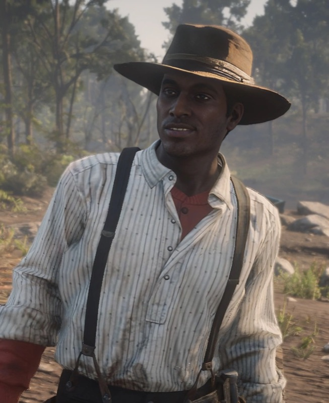
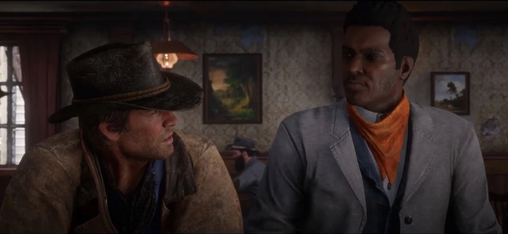
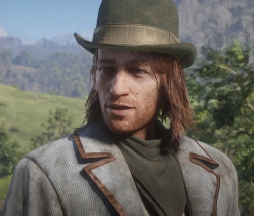

Character · Van der Linde gang
Lenny Summers
Lenny Summers is one of the youngest and most likeable members of the Van der Linde gang in Red Dead Redemption 2: sharp, educated and level-headed, the son of a man who had escaped slavery. He is among Arthur Morgan's most trusted and easy companions.
Brave and genuinely competent in a fight, Lenny is the gang's promise of a better future, which makes his death one of the story's cruellest blows.
- Died
- 1899
- Status
- Deceased
- Nationality
- American
- Affiliation
- Van der Linde gang
- Role
- Young gunman
- Games
- Red Dead Redemption 2
Biography
The gang's bright young hope
Lenny is clever, well-read and quick on his feet, a stark contrast to the gang's blunter gunmen. He shares one of Red Dead Redemption 2's most beloved scenes with Arthur: a riotous drunken night in a Valentine saloon.

Personality
Thoughtful, principled and brave, Lenny is wise beyond his years. He is acutely aware of the dangers he faces as a young Black man on the frontier, and carries himself with a quiet dignity the gang respects.
Relationships

Arthur Morgan
His closest friend among the gang's elders; their drunken night in Valentine is one of the game's warmest moments.

Hosea Matthews
A mentor figure who dies in the same Saint Denis catastrophe; the two are buried side by side.

Dutch van der Linde
The leader Lenny follows loyally, part of the gang Dutch's choices ultimately doom.

Sean MacGuire
A fellow young gang member and friend; the two represent the gang's next generation.

Micah Bell
A gang newcomer Lenny has little reason to trust, part of the toxic turn the camp takes.
Death and fate
Lenny is killed during the gang's disastrous bank robbery in Saint Denis, shot down by lawmen as the heist falls apart, the same catastrophe that claims Hosea Matthews. He is buried beside Hosea, the gang's bright future cut down alongside its wise old heart.
Behind the scenes
Losing Lenny and Hosea in the same sequence is a deliberate gut-punch: the gang loses its conscience and its future at once. Many players rank the Saint Denis robbery among the story's darkest turning points.
Reception and legacy
Lenny is one of the most universally liked characters in Red Dead Redemption 2, and his death is among the most mourned. He represents the kinder, smarter world the gang might have built and never will.
Trivia
- His drunken night out with Arthur in Valentine is a fan-favourite scene.
- He is the son of a man who escaped slavery.
- He is buried next to Hosea Matthews.